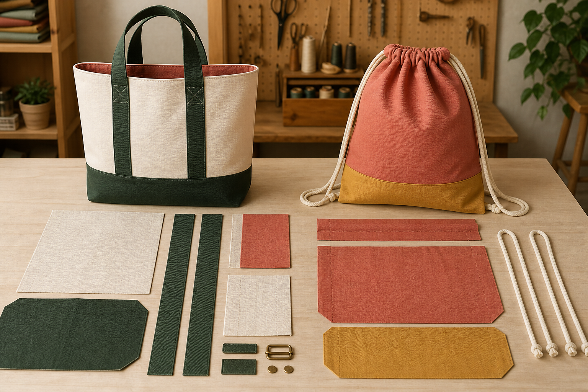
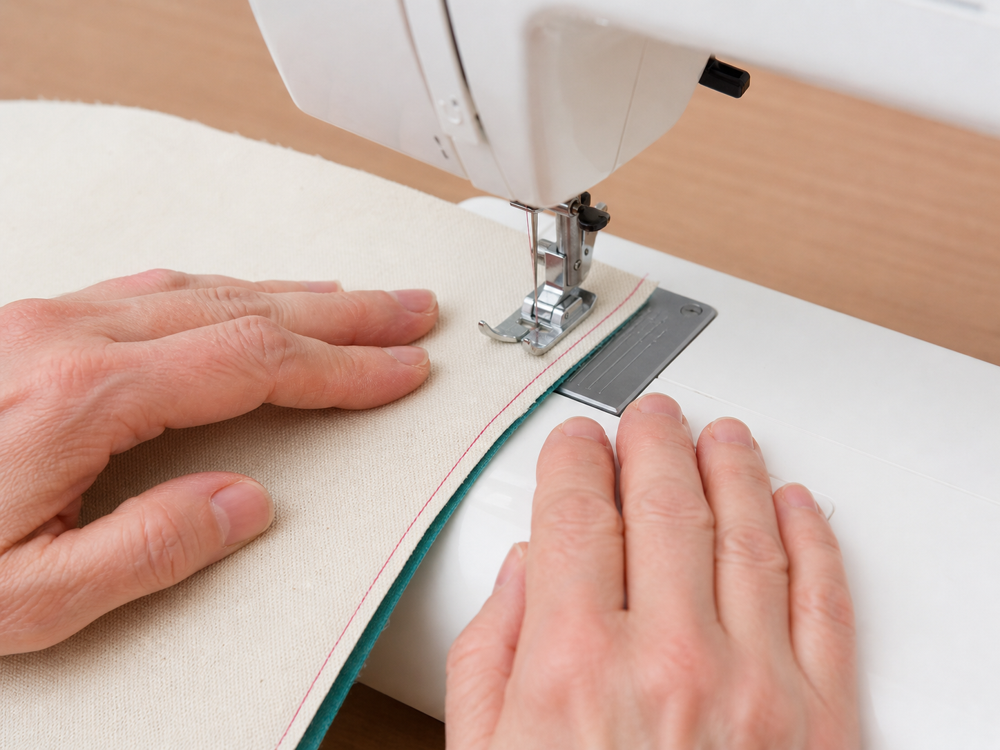
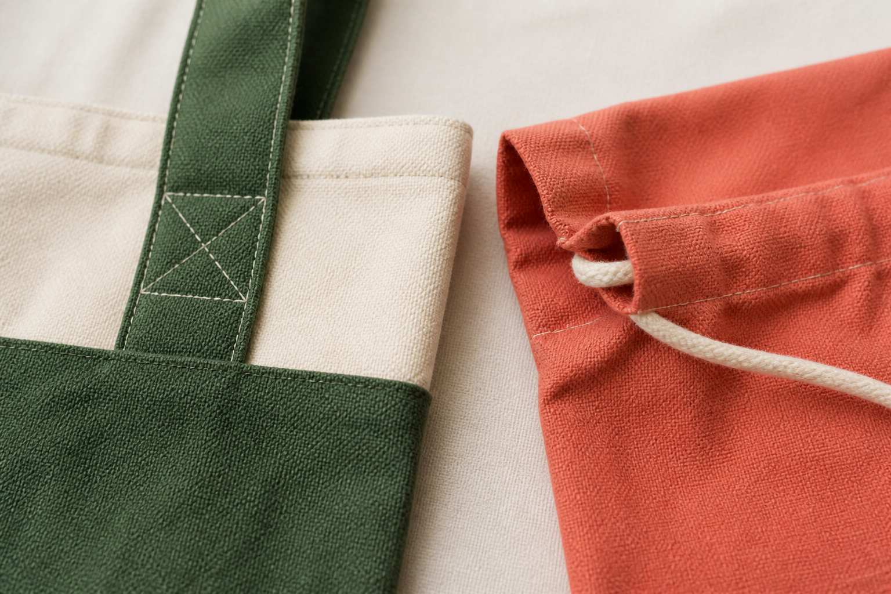

Section 1
Choosing the Tote or Drawstring Pathway
Learning purpose: Help students recognise the stable structural differences between the two authorised pathways and follow only the pathway approved for their project.
The tote and drawstring pathways solve the carry-item challenge with different opening and carrying systems, so their production sequences are related but not interchangeable.
The tote pathway forms a bag body from fabric placed on a fold and uses two straps as the carrying system. Surface decoration and any pocket work are completed before the body is assembled. The upper edge is later double-folded, the straps are attached and their joins are reinforced.
The drawstring pathway uses two rectangular body pieces and creates a casing at the upper edge. The body pieces are edge-finished separately before joining, and an opening must remain clear so the cord can travel through the casing. A safety pin can guide the cord through once construction reaches that stage.
Both pathways use controlled joining, backstitching at seam ends, suitable raw-edge finishing and staged checking. They also share the same larger design purpose: produce a reusable personal carry item that responds to its user and environmental situation.
A student follows the pathway approved for the project and uses its matching plan. Mixing a tote strap step into a drawstring sequence, or closing an opening needed for cord, would break the relationship between structure and function.
Key vocabulary
- pathway
- An approved sequence of processes leading to a particular product structure.
- casing
- A folded and stitched channel that allows a cord to pass through.
- carrying system
- The components and joins that allow the user to hold or carry the product.
- structural difference
- A change in product construction that affects how it works or is produced.
Tracing structure back to the pathway
- Identify the intended opening and carrying system in the approved design.
- Match straps and a folded body to the tote pathway, or a casing, cord and two body pieces to the drawstring pathway.
- Highlight the shared early actions, including surface work before body assembly and planned raw-edge control.
- Circle the first pathway-specific action and check that every later action remains compatible with it.
Conclusion: The pathway is coherent when each process supports the same opening, body and carrying structure.
Ideas to challenge
- The tote and drawstring sequences can be mixed freely because both products are bags.
- The casing is decorative and does not need a clear path for the cord.
- Strap reinforcement and drawstring threading solve the same structural problem in the same way.
Recognise the tote structure
Look for a body formed on a fold, two straps, a double-folded upper edge and reinforced strap joins.
Recognise the drawstring structure
Look for two body pieces, a top casing, a clear opening and cord threaded through the channel.
Protect the pathway
Keep shared actions and pathway-specific actions in the approved order; do not combine incompatible structural steps.

Complete non-video pathway
Pathway sorter
The side-by-side exploded visual and approved comparison cards compare both structures while keeping the teacher's final pathway decision explicit.
Before
- Read the adjacent shared-versus-specific pathway explanation.
- Study the tote and drawstring exploded view without treating either as approved yet.
During
- Sort each card into both pathways, tote only or drawstring only.
- Arrange cards so surface work comes before body assembly and finishing follows the relevant structure.
- Explain how one tote card and one drawstring card support their opening or carrying system.
After
- Record the structural comparison.
- Do not begin a pathway until the teacher confirms the local project requirement.
Evidence to keep: A correct shared/tote/drawstring sort and two structural explanations.
Check, apply and save evidence0/10 + response
Answer all ten checks. Feedback appears after each choice, so use it to revisit the linked theory before continuing.
Higher-order response
Explain your thinking
Compare the tote and drawstring pathways and explain why their structure-specific processes must remain coherent from planning to finishing.
Build your response
- Describe the body, opening and carrying system of each pathway.
- Identify two shared production principles and two pathway-specific processes.
- Explain one defect that could result from mixing incompatible steps.
- Conclude with how a student can protect the approved pathway during production.
Success looks like
- Accurately distinguishes the stable tote and drawstring structures.
- Explains relationships between processes and product function.
- Uses comparison and cause-and-effect reasoning.
Nothing saved yet.
Resume this packageSection 2
Preparing, Decorating and Sewing the Bag Body
Learning purpose: Explain how careful preparation, early surface work, controlled seams and raw-edge treatment build an accurate and durable bag body.
Good body construction is a chain of small controlled actions; accuracy lost early is difficult to hide at the finishing stage.
Preparation protects the design before joining begins. Body pieces and any approved pocket or decoration are organised according to the matching plan. Surface work is completed while the fabric is flat, then placement and orientation are checked so a design is not accidentally hidden, inverted or caught into a seam.
The authorised bag procedures use a 1.5 cm seam allowance and backstitching at seam ends. A consistent seam allowance helps the pieces align and supports the intended shape. Backstitching secures the beginning and end of the stitch line, where loose stitching could start to open.
Raw edges are controlled with suitable zigzag finishing. In the drawstring pathway, the two body pieces are finished separately before joining. Following the pathway order prevents edge finishing from blocking later access or changing the intended opening.
Quality is checked in stages: confirm alignment before sewing, inspect the stitch line after joining, trim suitable corner bulk where the tote procedure calls for it, and press at the planned checkpoints. If a seam is uneven or catches the wrong layer, stop and correct the cause rather than building the next process over the defect.
Key vocabulary
- seam allowance
- The planned distance between the raw edge and the stitch line.
- backstitch
- Short reverse stitching used to secure the beginning or end of a seam.
- raw edge
- A cut fabric edge that may fray and needs an appropriate treatment.
- alignment
- The accurate positioning of layers, edges and design features before joining.
Responding to an uneven test seam
- Stop at the checkpoint and inspect where the stitch line moved away from the planned seam allowance.
- Check whether alignment, fabric control or an unconfirmed machine setup caused the change.
- Correct the cause using the approved class process, then produce a short retest on a sample.
- Compare the retest with the intended seam and record the decision before returning to the product.
Conclusion: The checkpoint improves quality because the cause is corrected before the uneven seam affects later construction.
Ideas to challenge
- A small seam error can always be hidden by adding later processes over it.
- Backstitching changes the seam allowance rather than securing seam ends.
- Decoration is easier after the bag body has been fully assembled.
Prepare the surface
Complete approved decoration and pocket work on flat fabric, then check placement and orientation before assembly.
Control the seam
Maintain the authorised 1.5 cm allowance, align layers and secure the stitch line with backstitching at both ends.
Check and correct
Inspect alignment, stitching, raw-edge treatment and pressing at planned checkpoints; correct the cause before continuing.

Complete non-video pathway
Quality checkpoint simulation
The authorised close-up sequence lets students decide continue or correct at the exact placement, seam and edge checkpoints without importing another method.
Before
- Read the adjacent stable shared construction facts and inspect the close-up sequence.
- Use the approved pathway sheet; do not infer missing dimensions or steps.
During
- Inspect decoration placement and orientation before body layers are joined.
- Compare a test stitch line with the planned seam allowance and look for unsecured ends or caught layers.
- Choose continue or correct for each checkpoint and explain the likely effect on later construction.
After
- Record one defect, likely consequence and safe correction point.
- Wait for teacher confirmation before applying the sequence to project material.
Evidence to keep: Three checkpoint decisions with evidence and likely downstream effects.
Check, apply and save evidence0/10 + response
Answer all ten checks. Feedback appears after each choice, so use it to revisit the linked theory before continuing.
Higher-order response
Explain your thinking
Explain how controlled preparation, surface work, seam construction and staged checking combine to produce an accurate and durable bag body.
Build your response
- Explain why approved decoration and pocket work occur while the fabric is flat.
- Describe the role of alignment, the authorised seam allowance and secured seam ends.
- Explain how raw-edge treatment and pressing checkpoints support quality.
- Apply the process to an uneven seam and explain a cause-and-correct response.
Success looks like
- Explains the sequence using accurate cause-and-effect relationships.
- Connects each process to product accuracy, durability or accessibility.
- Uses staged checking to propose a responsible correction.
Nothing saved yet.
Resume this packageSection 3
Completing Casings, Straps and Finishing Details
Learning purpose: Explain how pathway-specific upper-edge and carrying-system details are completed, reinforced and tested without resolving unknown local requirements.
Finishing details are structural decisions: a neat upper edge, a clear casing or a reinforced strap join affects how the bag looks, carries and lasts.
In the tote pathway, the authorised upper edge is formed with a first fold of 1 cm followed by a second fold of 3 cm. The fold controls the raw edge and creates a clean area for attaching the two straps. Strap placement follows the approved plan, and each join is reinforced with an X because the connection carries repeated force in use.
In the drawstring pathway, the authorised casing is also formed with a 1 cm fold followed by a 3 cm fold. The opening is kept clear, then a safety pin is used to guide cord through the channel and the ends are secured. The exact cord arrangement follows the approved local plan.
Finishing is checked from both the inside and outside. Look for an even upper edge, a clear and usable opening, secure stitching, no unintended caught layers and a carrying system that moves or holds as intended. Threads and suitable corner bulk are trimmed only as directed by the matching procedure.
A functional test should be controlled and appropriate to the intended use. The aim is to observe the opening and carrying system without overloading or damaging the product. A defect leads back to its cause: a twisted strap points to alignment, a blocked casing points to the seam or opening, and loose stitching points to securing or stitch quality.
Key vocabulary
- reinforcement
- Extra construction used to strengthen an area that carries force or repeated stress.
- upper-edge finish
- The controlled treatment at the opening of the textile product.
- casing opening
- The access point through which cord enters the casing channel.
- functional test
- A controlled trial that checks whether a product feature performs its intended job.
Tracing a blocked drawstring casing
- Stop pulling and check whether the cord has reached a seam, caught layer or closed opening.
- Compare the casing with the approved pathway and identify where the clear channel was interrupted.
- Use the approved class correction process rather than forcing the cord or damaging the fabric.
- Retest the channel gently and record what construction check will prevent the same defect next time.
Conclusion: The product is improved by correcting the construction cause, not by applying more force to the symptom.
Ideas to challenge
- Finishing details are decorative only and do not affect product function or durability.
- A blocked casing should be solved by pulling the cord harder.
- A neat-looking strap join does not need reinforcement or a functional check.
Finish the tote
Create the authorised double-fold upper edge, align the two straps to the approved plan and reinforce each load-bearing join with an X.
Finish the drawstring
Create the authorised double-fold casing, protect the opening, guide cord through with a safety pin and secure the ends as approved.
Inspect and test
Check inside and outside, then use a controlled functional test to trace any defect back to alignment, stitching, reinforcement or a blocked pathway.

Complete non-video pathway
Defect-to-cause clinic
Close-up construction samples make reinforcement and cord-clearance relationships visible for both pathways without authorising unknown details.
Before
- Read the adjacent pathway-specific finishing explanation.
- Inspect the tote strap-join and drawstring casing samples.
During
- Describe what each feature is meant to do before judging the defect.
- Trace each symptom to the most likely alignment, stitching, reinforcement or access cause.
- Choose a safe, approved correction point and name the checkpoint that could prevent recurrence.
After
- Record one tote and one drawstring diagnosis.
- Apply only the diagnosis matching the teacher-confirmed pathway and local procedure.
Evidence to keep: Two defect-to-cause explanations and one preventative checkpoint.
Check, apply and save evidence0/10 + response
Answer all ten checks. Feedback appears after each choice, so use it to revisit the linked theory before continuing.
Higher-order response
Explain your thinking
Evaluate how finishing details make either an approved tote or drawstring bag functional, durable and ready for testing.
Build your response
- Describe the relevant upper-edge and carrying or opening structure.
- Explain why reinforcement or a clear casing path matters to repeated use.
- Identify internal and external quality checks for the chosen pathway.
- Apply defect-to-cause reasoning to one likely finishing problem and propose an approved correction point.
Success looks like
- Uses accurate pathway-specific construction relationships.
- Explains how details affect function and durability, not appearance alone.
- Supports an evaluation with checks and cause-based reasoning.
Nothing saved yet.
Resume this packageModule review
Three sections, one connected idea
Use these direct links to reopen any incomplete package. A section counts when all ten checks and a substantive long response are saved.